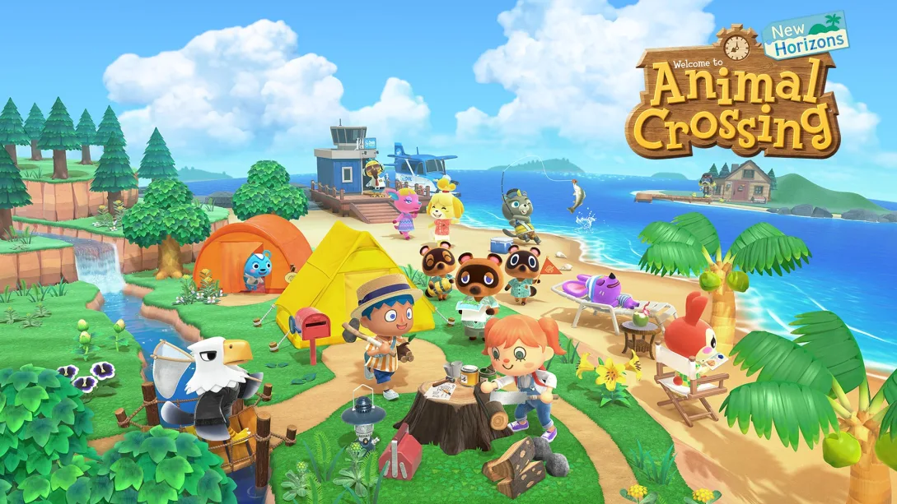
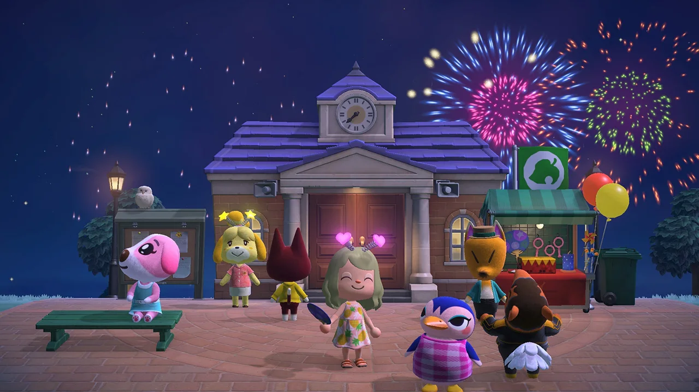

What is Animal Crossing?
Animal Crossing is a social simulation video game series developed and published by Nintendo. The series was conceptualized and created by Katsuya Eguchi and Hisashi Nogami. In Animal Crossing, the player character is a human who lives in a village inhabited by various anthropomorphic animals and can do various activities like fishing, bug catching, and fossil hunting. The series is notable for its open-ended gameplay and use of the video game console's internal clock and calendar to simulate real passage of time.
Since its initial release in 2001, five Animal Crossing games have been released worldwide, one each for the Nintendo 64/iQue Player (enhanced and reissued for the GameCube), Nintendo DS, Wii, Nintendo 3DS and Nintendo Switch. The series has been both critically and commercially successful and has sold over 60 million units worldwide. Four spin-off games have also been released: Animal Crossing: Happy Home Designer for Nintendo 3DS, Animal Crossing: Amiibo Festival for Wii U, Animal Crossing: Pocket Camp for mobile devices and Animal Crossing: Happy Home Paradise for the Nintendo Switch.

